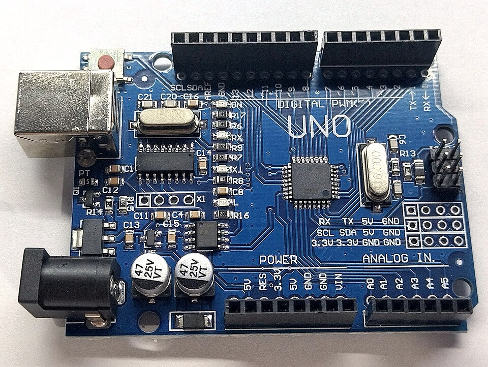

Quiz-show buzzer
Learn to read a push button. Make the light and buzzer work for both quiz teams.
Open Week 8 →Tech for Change
Arduino Uno · Tinkercad
Learn to read a push button. Make the light and buzzer work for both quiz teams.
Open Week 8 →
Finish green, amber and red. Ready for more? Add a pedestrian crossing.
Open Week 7 →Continue from your last working code. Build up to three lights, one step at a time.
Continue Week 6 →Use Scratch variables and decisions to build a game gate that follows your rules.
Open project →Build an LED circuit in Tinkercad and create a signal of your own.
Open project →Use Python to plan fair turns for a game club.
Open project →